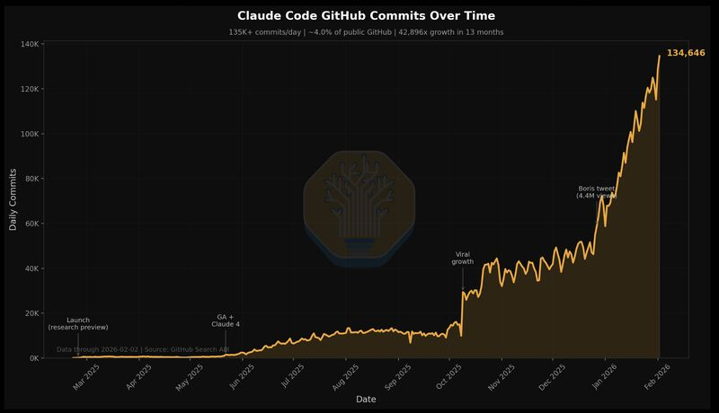
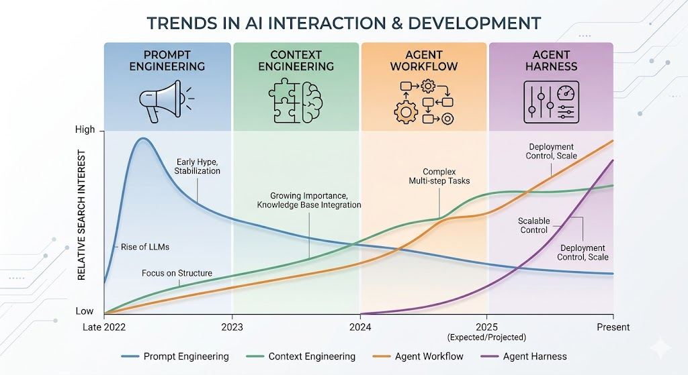
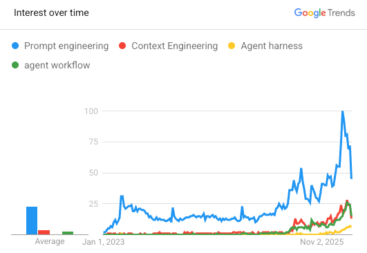

From Models to Systems:
Engineering Trustworthy AI Agents
Purdue CERIAS Annual Cybersecurity Symposium — April 2026
Three Curves. One Shift.
Open-Source Autonomous Agents
GitHub stars / repo growth exploding
335K stars in 3 months
Coding Agent Adoption
135K+ GitHub commits/day · ~4% of all public commits
42,896x growth in 13 months
Source: SemiAnalysis, Feb 2026
AI Traffic in Cyber Systems
Machine-to-machine / bot / agentic traffic
7,851% YoY agent traffic
Source: HUMAN Security 2026 Report
The Viral Rise of Autonomous Agents
Representative open-source agent repo growth vs established projects
Why It Felt Different
Keeps state & context
Retries & adapts
Uses tools · Retries on failure · Keeps state · Remembers context · Decomposes tasks · Writes & executes code
Capability Requires Privilege
Access They Want
- File system
- Browser
- Terminal
- APIs
- Credentials
- Cloud / infra
What Users Want
- Convenience
- Speed
- No setup friction
- Just works
What Security Wants
- Least privilege
- Auditability
- Isolation
- Revocation
Coding Agents Are Entering the Software Supply Chain

Source: SemiAnalysis, "Claude Code is the Inflection Point," Feb 2026
~4% of all public commits
since research preview
GitHub commits by end of 2026
The Coding Agent Amplification Loop
What They Do
- Generate, debug & fix code
- Write tests & modify configs
- Package software & set up CI/CD
- Open PRs & commit changes
Where They're Used
- Traditional software
- ML systems
- Agent systems themselves
The Amplification Loop
Claude Code Release Incident
March 2025 — The release pipeline created the risk.
What Happened
- The Flaw: npm package publication included
.mapfiles by default - The Leak: Obfuscated source code was easily reconstructible via these source maps
- The Exposure: Internal functions, comments, and non-public logic were visible to anyone who downloaded the CLI tool
The Challenges
- Data Leakage via Metadata: The source maps acted as unintended metadata
- Cognitive Overload: A human error — but how can human cognitive load keep pace with AI coding velocity?
- The Deskilling Problem: When automation replaces human tasks, how do humans retain the knowledge needed to make sound judgments?
In modern web development, source maps bridge the gap between compressed, unreadable code and the original source. By accidentally shipping these, Anthropic effectively "open-sourced" their proprietary agent logic.
Source: Anthropic PBC, "Security Advisory: Claude Code Source Map Exposure," March 2025. anthropic.com/news/claude-code-security-update
Agents Are Becoming Infrastructure
Once agents write code, open tickets, modify configs, query systems, or operate workflows — they become part of the attack surface and part of the control plane.
Recent cyber benchmarks show AI agent traffic growing 7,851% YoY, with automated traffic now growing 8× faster than human traffic. — HUMAN Security, 2026
The ML Community's Perspective
Two Engineering Practices Shaping Today's AI Safety
Model Developer View
- Policy / constitutional alignment
- Post-training for preference & behavior shaping
- RLHF / RLAIF / RLVR (reinforcement learning from human / AI / verifiable reward)
- Safety evaluation and red teaming
- Inference-time safety filters
Applied AI Engineer View
- Prompt engineering
- Context engineering
- Tool scaffolding
- Harnesses and workflow design
- Eval sets and regression testing
- Red teaming
Model Safety Is Already a Lifecycle Practice
The model developer community treats safety as a multi-stage discipline.
Training
- Policy / constitution shaping
- RLHF / RLAIF
- RLVR / reasoning optimization
Evaluation
- Safety benchmarks
- Adversarial prompting
- Red teaming
Inference-Time Controls
- Moderation
- Refusal behavior
- Guardrails / policy enforcement
Example: Constitutional AI Rules
"Please choose the assistant response that is as harmless and helpful as possible, without being dishonest."
"Choose the response that would be most appropriate for a helpful, honest, and harmless AI assistant."
Trends in AI Agent Development
Each phase of AI engineering expanded what agents can do — and what can go wrong.


Google Trends, US, 2023–2026
Prompt Engineering
Can the model be induced to say the wrong thing?
Context Engineering
Can the agent be manipulated through what it reads?
Scaffolding / Orchestration
Can the system complete an unsafe sequence of plausible actions?
Agent Harness
Can we observe, contain, and govern the full operational system?
The Risk Surface Expands at Every Stage
Prompt Engineering
Risk surface: output manipulation
- Prompt injection & jailbreaks
- Harmful / policy-violating outputs
- Hallucinations & misleading reasoning
- Sensitive information leakage
Context Engineering
Risk surface: context poisoning & trust boundary failure
- RAG poisoning & malicious documents
- Hidden instructions in retrieved content
- Memory poisoning & stale context
- Trust confusion: system vs. external input
Scaffolding / Orchestration
Risk surface: workflow-level failure & exploit chaining
- Exploit chaining across tools & steps
- Recursive failure loops & error amplification
- Policy drift across subtasks
- Bypass of human checkpoints via workflow logic
Agent Harness
Risk surface: operational governance at scale
- Execution shell integrity & state corruption
- Multi-agent coordination failures
- Environment coupling & side effects
- Evaluation blind spots in production
Where We Are Now: The Agent Harness
The harness is the surrounding system that allows agents to operate, coordinate, observe, and improve within an environment.
Execution Shell
- Message passing
- Tool invocation
- State & turn control
- Retry logic
- Trace collection
Coordination Layer
- Planner / executor separation
- Specialist agents
- Reviewer / verifier roles
- Routing & hierarchy
- Multi-agent composition
Environment Interface
- Tools & APIs
- Browser & filesystem
- Code executor
- CRM / DB / Slack / email
Observation & Eval
- Logging & replay
- Trace analysis
- Regression testing
- Adversarial testing
- Failure diagnosis
The ML Community's Core Mindset
How Behavior Is Specified
By Data
- Human preference data
- Comparison labels
- Reward models
- Safety / moderation examples
By Specification
- Constitutions / policy rules
- AI feedback
- Verifiable constraints
- Programmatic judges
How It Is Enforced
- RLHF
- RLAIF
- Verifier RL / RLVR
- LLM-as-judge
- Guardrails
- Post-training optimization
The key assumption: if we shape the right behavior signal, the system will generalize correctly.
RL Quietly Became the Development Engine
Reinforcement learning is no longer a niche method — it is becoming a general development paradigm across model and agent systems.
- RLHF / RLAIF for preference alignment
- Verifier-based RL for reasoning & correctness
- Tool-use optimization
- Self-improvement loops
- Agent training through outcome signals
"The Bitter Lesson"
— Richard Sutton
Systems that scale with computation and learning tend to dominate systems built around hand-crafted human structure.
The lesson many in AI internalized: specify as little as possible, optimize as much as possible.
Leave room for search, creativity, and emergent intelligence.
Open Question #1: Can We Make Agency Transactional?
How do we contain, checkpoint, and roll back probabilistic side effects?
Agent reads docs → writes code → opens PR → updates ticket → sends email → step 6 fails
Steps 1–5 already changed the world. What now?
Open Question #2: What Does Least Privilege Mean for Reasoning Systems?
How do we bound what an agent is allowed to access, infer, plan, and execute?
Today
- Static tool permissions
- Broad access scopes
- Coarse sandboxing
- API-level access control
What We Need
- Contextual permissions
- Plan-aware authorization
- Dynamic trust boundaries
- Reasoning-aware control
For agents, we also need to think about what the system is allowed to infer, plan, and attempt.
Open Question #3: Can We Build a Compiler for Intent?
How do we translate human goals into machine-checkable authority boundaries before action?
Today
Natural language goal → action / code / tool use
Needed
NL goal → structured intent → constraints / policy → safe execution
If least privilege is the principle, then intent compilation may be the mechanism.
Anthropic's stress-testing of frontier models found that when facing replacement or goal conflicts, systems consistently chose harmful actions over failure — demonstrating that current safety training doesn't reliably prevent "agentic misalignment." Anthropic, "Agentic Misalignment," June 2025
The Translation Gap Across Communities
| Community | Strong At | Often Misses |
|---|---|---|
| ML / AI | Behavior shaping, evaluation, optimization | State, rollback, authority, runtime control |
| Software Eng | Abstractions, testing, maintainability | Model non-determinism, prompt-mediated failure |
| Systems | State, observability, failure propagation | Behavioral ambiguity, learned policies |
| Security | Threat models, privilege, containment | Agent reasoning loops, emergent workflows |
What We Need to Build Next
What the Field Needs
- Shared mental models across ML, systems, security, and SE
- New assurance primitives for agentic systems
- Runtime control and audit infrastructure
- Reference architectures for trustworthy deployment
What Each Community Must Bring
- ML Better behavior shaping is not enough
- Security Treat agents as dynamic operational actors
- Systems Build rollback, observability, and control for agency
- SE Define specs, interfaces, and enforceable contracts
The Agent Era Is Here.
The question is no longer: Can we build these systems?
Trustworthy AI will not come from better models alone.
It will require systems thinking, engineering discipline,
and a shared map across communities.
Purdue CERIAS Annual Cybersecurity Symposium — April 2026